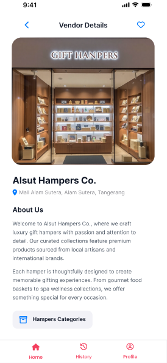
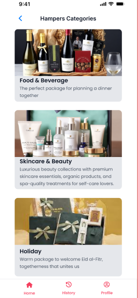
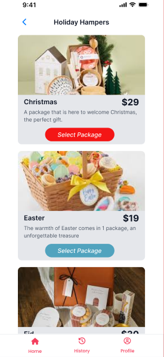

Vendor Details

Introduces the hamper vendor, its store information, and the path to browse available categories.
A semester 3 academic project focused on systems analysis and design, translating business needs and user requirements into structured information system solutions.
Hampiness was developed as part of my third-semester coursework in Information Systems. Compared with my earlier academic projects, this project allowed me to work more deeply with systems analysis, business process understanding, system modeling, and the documentation required to design an information system.
Hampiness is an academic systems analysis and design project where the focus was on understanding a problem domain, identifying system requirements, modeling system processes, and translating those findings into a structured information system design. The project documentation contains the detailed analysis and system design work.
Three key mobile screens from Hampiness, presented in individual phone mockups to show how the interface flows from vendor details to category browsing and hamper selection.

Introduces the hamper vendor, its store information, and the path to browse available categories.

Shows the available hamper categories with imagery and short descriptions to help users explore options.

Displays seasonal hamper packages, prices, and selection buttons for choosing a suitable gift.
This project represents my development during the early stages of studying Information Systems. It helped me connect concepts from systems analysis, modeling, and business processes into one academic project rather than focusing only on individual diagrams or theoretical concepts.
As a semester 3 project, Hampiness became an important step in developing my ability to analyze a system from both business and technical perspectives. The project strengthened my understanding of how system requirements and processes can be translated into structured models and documentation.